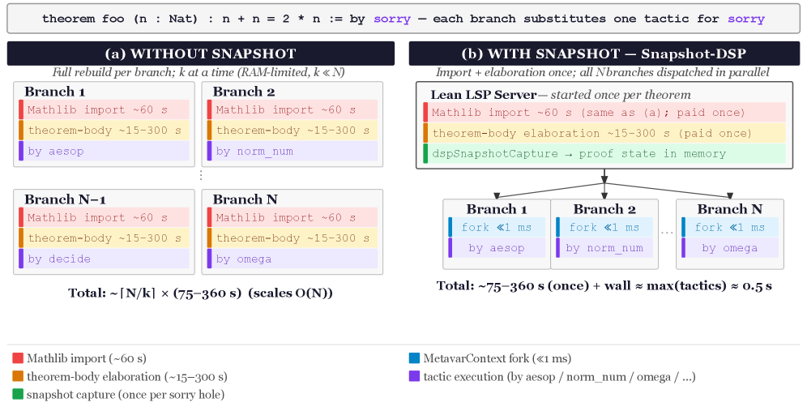

Introduces proof-state snapshotting via a Lean 4 language-server extension to speed parallel tactic search.
Abstract
Automated theorem proving systems built on Lean 4 increasingly rely on parallel tactic search over partially specified proofs, such as those generated by Draft-Sketch-Prove (DSP) pipelines. In current systems, each search branch reconstructs a proof state by re-running elaboration, leading to substantial per-branch overhead. In Lean 4 with Mathlib, this cost has two components: (1) import loading, which deserializes pre-compiled libraries ( 60 s per branch); and (2) theorem-body elaboration, which re-checks the theorem context up to the target goal (estimated 18-735 s depending on proof complexity). Together, these account for >99% of per-branch wall time, making portfolio-based search impractical at scale. We observe that this overhead arises from a mismatch between the structure of proof search and its execution model: branching is implemented via repeated reconstruction of proof states rather than direct reuse. To address this, we introduce proof-state snapshotting, which captures the elaborated proof state once and reuses it across branches via a small extension to the Lean 4 language server. Across 48 miniF2F-v2 problems (45 prove-phase benchmarks and 3 full end-to-end runs), our approach achieves a 5.6-50x wall-time speedup over the standard fallback (average 14x, median 9.7x). Speedup increases with the number of proof branches. Our method is orthogonal to import-level caching (e.g., Kimina Lean Server), which avoids import loading but not theorem-body elaboration. The patched Lean binary and the Snapshot-DSP pipeline will be released as open source upon publication.
Problem
In portfolio-based tactic search for Lean 4 theorem proving, each search branch reconstructs the proof state from scratch (import loading 60s plus theorem-body elaboration 18-735s), consuming over 99% of per-branch wall time and making parallel search impractical.
Approach
The authors introduce proof-state snapshotting, which captures the elaborated proof state once via the Lean 4 language server and reuses it across all branches through three custom LSP methods. The system forks the already-elaborated state at each sorry position and fans out tactic attempts in parallel using Lean's work-stealing scheduler, achieving O(1) elaboration cost regardless of branch count.

Figure 1: (a) Fallback (Level 0): every branch independently reloads Mathlib and re-elaborates the theorem body (75–795 s per branch depending on theorem complexity; 75 s for simple theorems, up to 795 s for the hardest benchmark), yielding O(N) total overhead. The diagram shows W\!=\!2 concurrent workers; in general W\approx\lfloor\text{RAM}/3\,\text{GB}\rfloor , so W\ll N on any single machine.
Results
Across 48 miniF2F-v2 problems, snapshotting achieves 5.6-50x wall-time speedup over the standard fallback (average 14x, median 9.7x). Speedup scales with sorry-hole count: 7.9x at 1 hole, 29.8x at 5 holes. The approach is orthogonal to import-level caching and composes with it for potentially over 100x combined speedup.